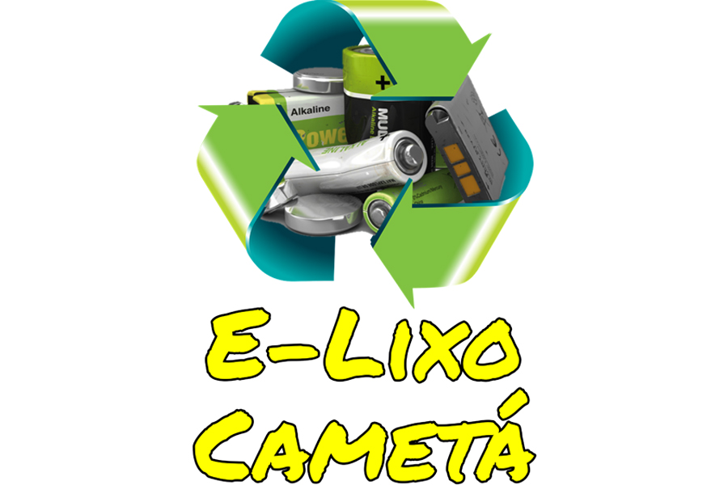

E-Lixo

E-Lixo é um projeto desenvolvido para orientar e sensibilizar a comunidade cametaense para os impactos negativos que os equipamentos eletrônicos podem causar para o meio ambiente e a saúde, quando descartado incorretamente, mostrando o caminho para o reaproveitamento deses componentes.Lixo eletrônico é aquele que deriva de aparelhos eletrônicos que deixam de ser úteis, por estar com defeito ou ultrapassado. Computadores, teclados, impressoras, baterias, pilhas, entre outros!